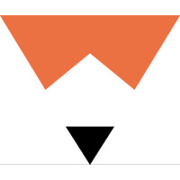

Published Articles
news
| Title | Author | Description | Date | |
|---|---|---|---|---|
| GUEST POST: Grinding the Mocks First/Final Mock Draft | “Benjamin Robinson of Grinding the Mocks gives us his data-informed mock draft” | Apr 25, 2024 | ||
| The Huddle Report Top 100 “Final” Submission | “Huddle Report Top 100 “Final” Submission – Ben Robinson” | Apr 25, 2024 | ||
| C.J. Stroud Falls to Colts in GTM’s Final Mock Draft | Dear Football Outsiders readers, I know that you are probably tired of mock drafts and don’t need yet another one. That’s OK! I feel your pain. On the other hand, I have collected over 2,000 mock drafts this cycle, so what’s one more? I won’t bore you too much longer with the particulars except to say: “For those about to mock, I SALUTE YOU!” | Apr 26, 2023 | ||
| Is C.J. Stroud a Candidate to Slide? | “NFL Draft - Risers and fallers. Stock up and stock down. It’s a tale as old as draft time immemorial. With the 2023 NFL draft season in the home stretch, let’s take a look at which players have the most momentum heading into draft week and which players are slipping and sliding down the Grinding the Mocks’ draft boards. Looking back at last year’s final list of Risers and Fallers is both a fun exercise and a humbling one at the same time. It’s a lesson in the cruel randomness and, as Donald Rumsfeld said, the”unknown unknowns” that make up the NFL draft.” | Apr 24, 2023 | ||
| Colts Take Will Levis in Latest Mock Draft |
“Previously on the NFL Draft: In 2022, we witnessed an unforgettable event as Trevor Lawrence was selected as the first overall pick by the Jacksonville Jaguars. The draft also saw a flurry of trades, with teams jostling for position to secure their preferred prospects. But as always, the draft is full of surprises. Will any teams make unexpected trades? Which under-the-radar prospects will emerge as future stars? And who will be the lucky team to select the next generational talent? Find out now on the 2023 NFL Draft.” |
Apr 11, 2023 | ||
| Anthony Richardson Highlights Post-Combine Risers | “If Travon Walker was the clear-cut winner of the 2022 NFL combine, then 2023’s winner must be Florida’s Anthony Richardson. Both are winners for similar reasons. As players without high levels of college production, it was well known that athleticism would be each player’s calling card. However, what we witnessed from both Richardson and Walker went above and beyond expectations and made them both post-combine contenders for top overall pick honors. Richardson put up the best ever performance by a quarterback at the NFL combine. His speed, size, and explosion offer a glimpse into the type of talent he can show if he can develop as a player.” | Mar 16, 2023 | ||
| Anderson Graduates to Bears in GTM Mock Draft | “Welcome to draft season! Unless you’re a Miami Dolphins fan. Or a 49ers, Broncos, Rams, Texans, or Browns fan. If so, congratulations on your tampering/acquisitions, but your first night of the draft will likely be less interesting than the rest of the league’s. For the rest of you, here’s an early look at the rookies you might be cheering for this fall.” | Feb 14, 2023 | ||
| When Draft Pundits Are Right, and N.F.L. Teams Wrong | ““Betting against the N.F.L.’s overall assessment of players is essentially saying your evaluation of a player is better than everyone else,” said Benjamin Robinson, the founder of Grinding the Mocks, a site that analyzes the draft. “It’s not sustainable.”“ | Apr 28, 2022 | ||
| Bulldogs, Ebiketie Surprise in Final GTM 2022 Mock Draft | “We made it, everyone! It’s officially NFL draft week. No sleep till Vegas! I really hope that the festivities go down as originally planned for 2020: the prospects traveling to the stage via a boat that takes them across the Bellagio fountains. I don’t have much else to say, except”may the NFL draft odds ever be in my favor here and in The Huddle Report Mock Draft Contest.” Ideally, I would love to have published this after the mocks by the most accurate draftniks in the industry have been released but such is the way of the world!“ | Apr 26, 2022 | ||
| Will Desmond Ridder Go in the First Round? | “Kyle Hamilton is probably the king of the aforementioned”overthinking season.” Hamilton played like a top-10 player during the 2021 college football season, then had a not-amazing combine followed by a fine pro day. Normally, that would be a perfect recipe for some positive regression to the top-10 status that Hamilton earned entering the draft process. But that’s not happening. Why? It might be the opposite of the “Christian Kirk” effect that I mentioned earlier about high-end wide receivers. It all comes down to the positional value that teams have assigned to safeties in the free-agent market.” | Apr 19, 2022 | ||
| Hutchinson Goes First in Latest GTM Mock Draft | “Free agency has come and gone and changed the landscape of the NFL as teams head into 100% draft mode over the coming month. Never in the recent history of the league has there been such a disdain for first-round draft picks as the Denver Broncos (Russell Wilson), Cleveland Browns (Deshaun Watson), Las Vegas Raiders (Davante Adams), and Miami Dolphins (Tyreek Hill) joined the Chicago Bears (Justin Fields), San Francisco 49ers (Trey Lance), Indianapolis Colts (Carson Wentz), and Los Angeles Rams (Matthew Stafford) as teams without high-profile draft selections in 2022.” | Mar 29, 2022 | ||
| Travon Walker Highlights Post-Combine Risers | “Travon Walker is 100% the biggest winner from this year’s combine. Walker played on a stacked National Championship-winning Georgia defense that will likely have at least eight players drafted this year alone, with four of the eight included in the Grinding the Mocks’ Post-Combine/Pre-Free Agency Top 32. Walker was viewed as the sixth-ranked edge rusher and 22nd-ranked player in the draft class pre-combine; two weeks after, he has risen to be the third-ranked edge rusher and sixth-ranked player.” | Mar 18, 2022 | ||
| GTM Mock Draft: Jaguars Go Offensive Line | “For fans of the Rams and Bengals, welcome to draft season. Actually, that welcome really only applies to Bengals fans—the Rams don’t have a first-round pick this year or next thanks to the aforementioned Matthew Stafford trade, and they don’t have a pick at all in this draft until the supplemental draft selections at the end of the third round (which they received due to the Lions hiring current general manager Brad Holmes). Good times!” | Feb 15, 2022 | ||
| Final 2021 Mock Draft | “We made it, everyone! It’s officially NFL draft week (or the week before the draft since that’s when I’m technically writing this article). Through the twists and turns of a college football season that almost didn’t happen to not having a combine, this has been another unprecedented draft process. I don’t have much else to say, except: may the NFL draft odds ever be in my favor here and in The Huddle Report Mock Draft Contest.” | Apr 26, 2021 | ||
| Pre-Free Agency Mock Draft | “Well, it turns out that while I may know how to write R code to scrape mock drafts and run statistical models, writing an accurate mock draft is much easier said than done. Out of the 269 first-round mock drafts that were published within two weeks of the draft in 2020, my Grinding the Mocks’ Meta-Mock Draft projections had a pick-adjusted mean squared error around the 50th percentile (it probably didn’t help that I listed six players as first-round picks that ended up as second-round picks, including a pretty late second-rounder) and even two players who ended up being drafted in the third round.” | Mar 15, 2021 | ||
| Grinding the Mocks’ Meta-Mock Draft | “Isn’t it ironic? As someone who collects mock drafts and aggregates them for my Grinding the Mocks project, I have never done my own mock draft. Don’t get me wrong, I have spent many a lunch break sitting in front of (insert favorite mock draft simulator here). In the lead up to the 2019 NFL draft, I posted my top 32 ranked players by Expected Draft Position (EDP), but this year I will attempt to get down in the weeds a little bit with all the tape-grinders out there.” | Apr 21, 2020 | ||
| The Value of Mock Drafts | “Over the years, mock drafts have been derided as unrealistic at best and meaningless at worst by fans and the media, but I could think of no other source of data that could adequately answer what I was trying to get at that first night of the 2018 draft. So I did what any analytically minded person does when they don’t have data: I collected it myself.” | Apr 7, 2020 | ||
| We Looked At Almost 2,000 Mock NFL Drafts. Here’s What We Learned. |  | “Using data from Benjamin Robinson, who has curated close to 2,000 mock drafts from expert, media and fan sources from April 2018 to present, here are some of the most interesting fluctuations over the past few months — along with some of our own analysis mixed in. After all, it’s the draft, so we are all experts.” | Apr 25, 2019 |
No matching items